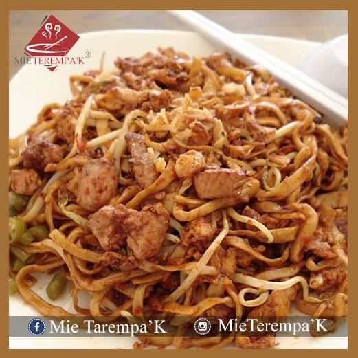
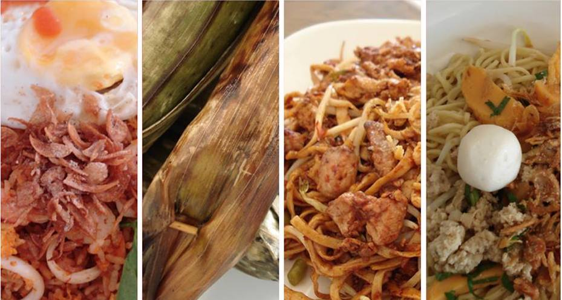
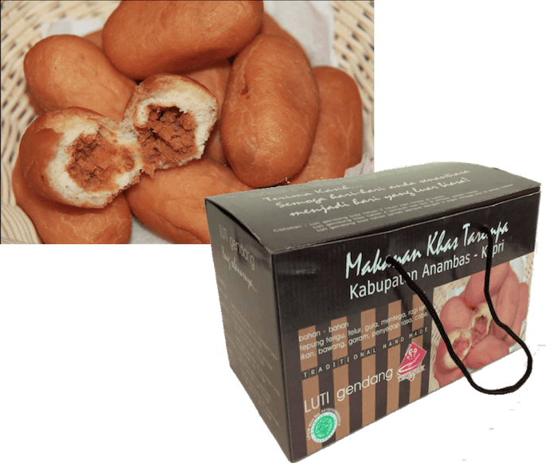
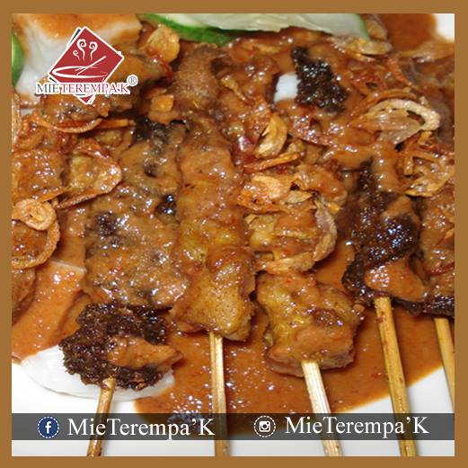
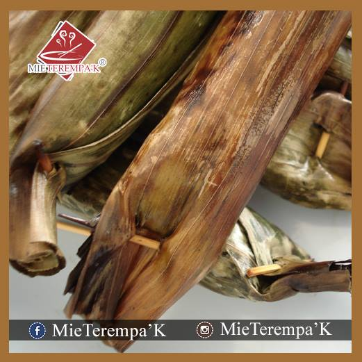
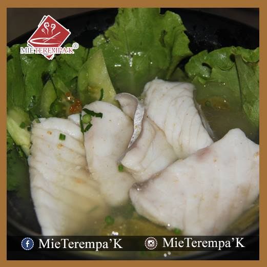
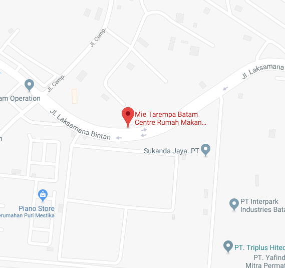

Mie Terempa'k
Versi klasik dengan karakter bumbu yang kuat dan tampilan yang langsung dikenali pelanggan lama.

Rumah Makan
Khas makanan Tarempa - Anambas, hadir dengan cita rasa gurih, pedas, dan khas yang mudah diingat.
Favorit Oleh-oleh dari Batam
Luti Gendang menjadi salah satu produk yang paling ditonjolkan di website asli. Versi static ini mempertahankan fokus tersebut dengan call-to-action yang jelas untuk order dan tanya stok.
Pesan Luti Gendang
Rasakan Bedanya
Kontennya tetap setia pada situs sumber, hanya susunannya dibuat lebih modern dan lebih mudah dipindahkan ke hosting statis.

Menu khas dengan tampilan sederhana dan fokus visual pada hidangan.

Alternatif menu khas lain yang ikut diperlihatkan sebagai variasi pilihan.

Sajian seafood yang menguatkan identitas kuliner pesisir dalam brand Mie Tarempa.
Mie Tarempa Hadir Di

Order / Informasi
Kontak utama dari situs asli tetap dipertahankan agar pengunjung GitHub Pages langsung bisa terhubung ke WhatsApp tanpa bergantung pada WordPress.
Click to WhatsApp: 08117776800